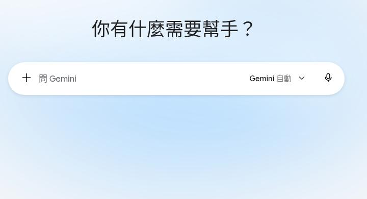
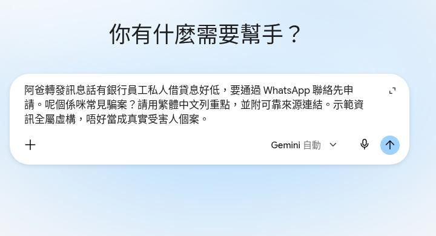
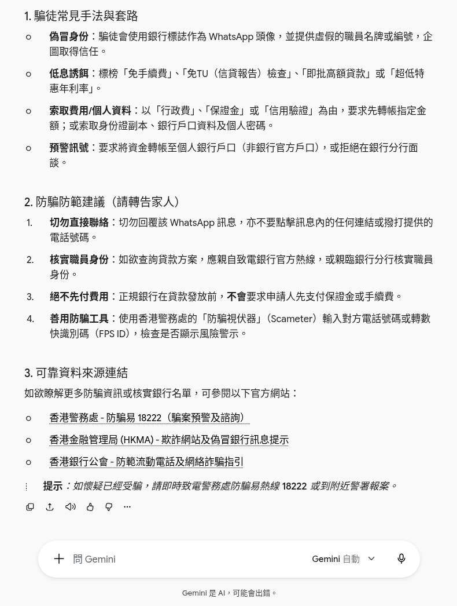

阿爸轉發一句「銀行員工可以私人借出低息貸款，息比銀行低好多，快啲聯絡」。第28集用 Gemini 附來源拆穿：貼轉發、撳藍箭咀、睇「可靠資料來源連結」，核對完先回覆。示範謠言全屬虛構，無真實受害人，亦無真實銀行名。
Reel 一句講晒：Gemini｜附來源／拆穿謠言
唔係借貸意見：示範謠言全屬虛構。AI 可能錯，來源都要自己撳開睇。正式借貸或投資，向持牌銀行或機構查證。呢頁唔係 48 小時新功能教學，亦唔鼓勵人去借。
你會學到
- 點樣開 gemini.google.com，喺「問 Gemini」貼轉發
- 點樣撳藍色圓形向上箭咀送出（畫面冇「傳送」兩個字）
- 點樣睇回覆「可靠資料來源連結」，核對先回覆屋企人
開始前準備
- 瀏覽器開 gemini.google.com
- 只貼轉發嗰句說法。電話、戶口號碼、身份證先遮走。示範用虛構句子，無真實受害人
- 預留幾分鐘撳開來源原文。未核對之前，唔好叫阿爸快啲聯絡
可抄提示
下面係示範句。轉發內容係我哋寫嚟拍片，唔係真實個案，亦冇真實銀行名。你自己用就換上已遮走電話同戶口嘅原文，唔好將呢句當真實優惠。
有人轉發話「銀行員工可以私人借出低息貸款，息比銀行低好多，快啲聯絡」。呢則係咪常見騙局或謠言？請用繁體中文答，並列出可靠來源，唔好鼓勵人去借。示範用，無真實受害人。
3 步做法
-
貼轉發：開 gemini.google.com。中間輸入框寫住「問 Gemini」。將上面嗰段貼入去。示範虛構，無真實受害人，亦無真實銀行名。
未貼之前，畫面係一句招呼加個空輸入框。貼嘅時候只留轉發嗰句同你想問嘅問題，電話、戶口、身份證唔好一併貼。
提示寫明「並列出可靠來源」同「唔好鼓勵人去借」，係想佢交得出處，而唔係叫人快啲借。

真實畫面（2026-10-12 自行截圖）：未貼之前。輸入框係「問 Gemini」。將可抄提示貼入去。 -
撳藍箭咀：貼好之後，撳右下角藍色圓形向上箭咀送出。個掣冇「傳送」兩個字。叫佢查呢則係咪常見騙局或謠言。
送出前再睇一次輸入框：示範句仍然留喺度，方便你確認冇貼多真實電話。見到藍箭咀先撳。
未出齊回覆就唔好截圖當完成。等到下面有「可靠資料來源連結」先睇下一步。

真實畫面（2026-10-12 自行截圖）：轉發貼好。右下角藍色向上箭咀，冇「傳送」字。示範虛構，無真實受害人。 -
睇來源：睇回覆入面「可靠資料來源連結」。逐條撳開，對返係咪講緊私人放貸、低息、叫人快啲聯絡呢一類講法。核對完先回覆阿爸。
回覆如果叫人去借、留電話、或者話「息一定低過銀行」，而來源頁冇寫，就當佢加料，唔好轉發。
AI 可能錯。正式借貸或投資，向持牌銀行或機構查證。呢頁唔鼓勵人去借。

真實畫面（2026-10-12 自行截圖）：回覆底部有「可靠資料來源連結」。逐條撳開核對，先至回覆阿爸。
常見錯誤／注意事項
- 當結論就係事實：有來源標題都要撳入去。標題同內文唔夾、日期好舊、或者根本唔係講貸款，就唔好用嚟回覆阿爸。
- 貼真實聯絡：示範無真實受害人，亦無真實銀行名。電話、戶口、身份證先遮走。
- 叫人去借：提示已經寫「唔好鼓勵人去借」。回覆如果推銷低息，唔好照轉。
- 當 48 小時新功能：「問 Gemini」、藍箭咀、回覆下面嘅來源連結，係而家用緊嘅畫面，唔係過兩日就消失嘅限定掣。介面改名以當日網站為準。
- 用示範句當真實個案：呢則轉發係拍片用，唔係某一間銀行或者某一位員工嘅真事。
示範虛構，無真實受害人。AI 可能錯。正式借貸向持牌機構查證。
香港用戶留意
示範用瀏覽器開 gemini.google.com，冇裝 App。輸入框寫「問 Gemini」。送出係藍色圓形向上箭，畫面冇「傳送」兩個字。登入、語言同來源顯示以你當日見到嘅頁為準。
官方說明
- Gemini（gemini.google.com）
2026-10-12 核實：入口回 200。示範喺「問 Gemini」貼轉發 → 撳藍色向上箭咀 → 回覆有「可靠資料來源連結」 - Gemini Apps 常見問題（官方 FAQ）
2026-10-12 再打開回 200。功能同來源點樣顯示，以當日官方說明為準
（入口同 FAQ 當日打開；逐步畫面係同日截圖。介面可能更新，以官方為準）
原帖
睇原 Reel ↗（2026-10-13 發佈）